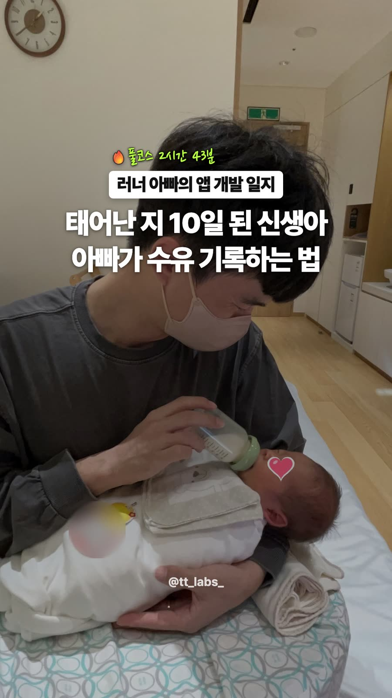
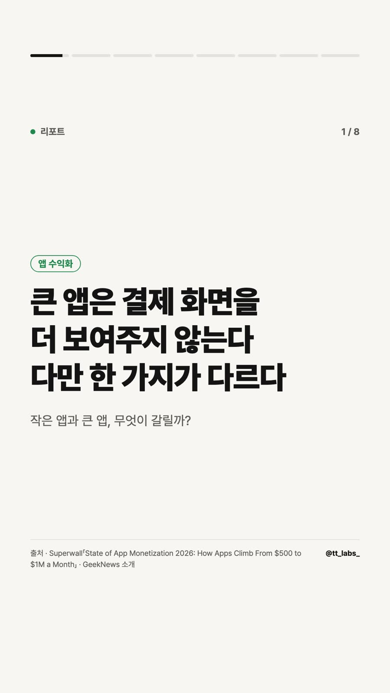

블로그
러너 아빠의 앱 개발 일지
Blog
Runner Dad's App Dev Diary

2026-11-28
태어난 지 10일, 수유 기록 앱을 직접 만들었어요분유 먹는 양이 그때그때 달라서, 꼭 필요한 기능만 담은 육아 앱을 직접 만들었어요.2026-11-28
Day 10 with our newborn, and a feeding log I built myselfThe amount changed every feeding, so I built a simple baby log with just what I need.
2026-11-26
큰 앱과 작은 앱의 차이는 실험 횟수였어요Superwall 리포트를 읽고, 혼자 앱 만드는 입장에서 느낀 점을 적었어요.2026-11-26
The Difference Between Big and Small Apps Was How Often They TestI read Superwall's monetization report and wrote down what it means for a solo app maker.
2026-11-23
틱톡 영상 업로드 자동화병원에서 짬짬이 틱톡 자동 업로드를 연동한 하루 이야기2026-11-23
Automating TikTok Video UploadsSetting up TikTok auto-upload in spare minutes at the hospital